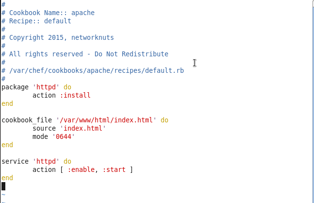

Cookbook
The fundamental unit of configuration and policy distribution.
Cookbooks define a scenario and contain all of the components that are required to support that scenario.
Create a Cookbooks Directory
In the SSH client, run:
mkdir cookbooks
What is the 'chef' command?
It executes the chef program that allows you to generate cookbooks and cookbook components.
In the SSH client, run:
chef --help
Creating the Apache Cookbook
In the SSH client, run:
chef generate cookbook cookbooks/apache
File Structure of a Cookbook
Files and Directories in a Cookbook
readme.md - the description of the cookbook's features written in Markdown
metadata.rb - every cookbook requires a small amount of metadata. It may be data like a name, its use, and who to contact for maintenance.
recipes directory - contains Ruby files called recipes
There is always a default recipe: default.rb

spec directory - contains recipes for unit testing
test directory - contains recipes for integration testing
.git directory - Git version control